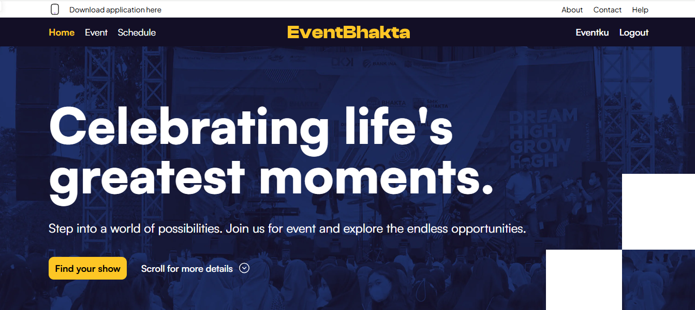
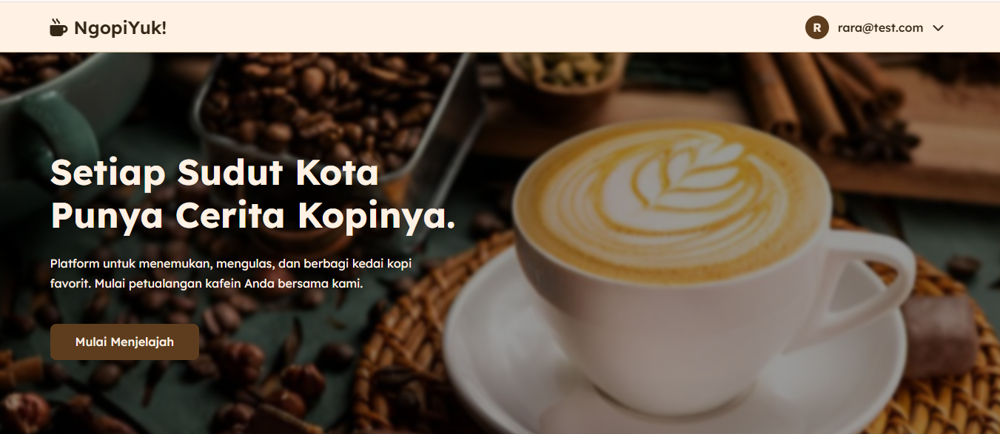
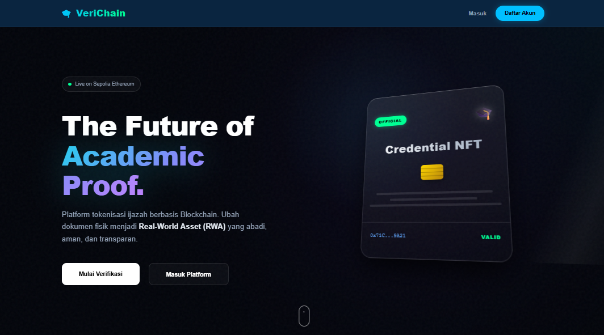
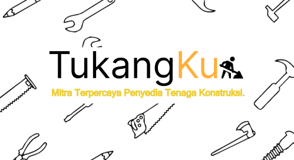
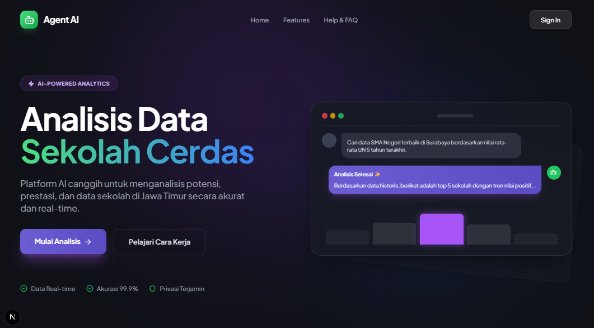

BUILT BY RARA
BUILT BY RARA
BUILT BY RARA

RAGIL DEANTIKA ROHMANIAR
✦ ABOUT ME ✦
I'm an Information Technology student at Telkom University with a focus on web development and software engineering. I build full-stack applications using modern tools like Laravel, Vue.js, and Node.js then turning every ideas into functional digital products.
My experience extends beyond coding! Through student organizations, I've developed leadership and project management skills, leading teams and streamlining operations. This combination allows me to approach development with both technical precision and effective collaboration.
I'm actively seeking opportunities in Web Development and Software Engineering. Whether it's building from scratch, contributing to open source, or joining an innovative team. I'm ready to make an impact!
MY EXPERTISE
EXPERIENCES
Web Developer Intern
✦ Yayasan Bhakti Wiyata
Developing and maintaining websites using Node.js, TypeScript, Laravel, MySQL, and Vue.js. Contributed to front-end and back-end design, database integration, as well as performing testing, debugging, and performance optimization.
Project Lead CCI Talkshow
✦ Central Computer Improvement
Led a team of 30 committee members to organize a regional talkshow regarding Artificial Intelligence strategies in education. Managed collaboration with 4 industry speakers and designed digital promotion strategies reaching 100+ participants.
Network Dept. Study Group
✦ CCI Telkom University
Developing networking and operating system skills such as Kali Linux and Ubuntu. Applied DevOps concepts using Docker and VPS for application management and deployment.
Committee Secretary
✦ HackAttack Academic Competition
Managed all committee documents and meeting minutes. Coordinated communication among 50+ committee members and relevant parties to ensure the competition ran smoothly according to schedule.
Project Lead (PKKMB)
✦ Megabit 7.0 - HMIT
Led the planning and execution of the freshman orientation for 190+ new students. Facilitated cross-functional coordination with 5 lecturers and the head of the study program, and prepared evaluation reports for the faculty.
Student Affair Staff
✦ HMIT Telkom University
Developed and optimized Standard Operating Procedures (SOPs) for various student activities. Enhanced team coordination through communication and event management training based on feedback from 200+ participants.
✦ PROJECTS ✦

EVENTBHAKTA
An automated system designed to streamline event registration and internal administration. Centralized dashboard for participant management.

NGOPIYUK!
A specialized platform for coffee shop discovery and internal management. Find your favorite coffee spots with responsive experience.

VERICHAIN
Digital verification platform transforming academic credentials into Real-World Assets (RWA) using ERC-721 NFTs with blockchain-based hashing.

TUKANGKU
Mobile solution connecting homeowners with skilled workers for urgent architectural repairs across Indonesia.

AGENT AI
AI-powered platform using RAG architecture to analyze technology needs for 500+ schools. Identifies sales leads for educational growth.
SURVEY APP
Comprehensive full-stack platform for creating, managing, and analyzing surveys with robust OOP architecture.
✦ CONTACT ✦
Have a project in mind? Let's create something amazing together!